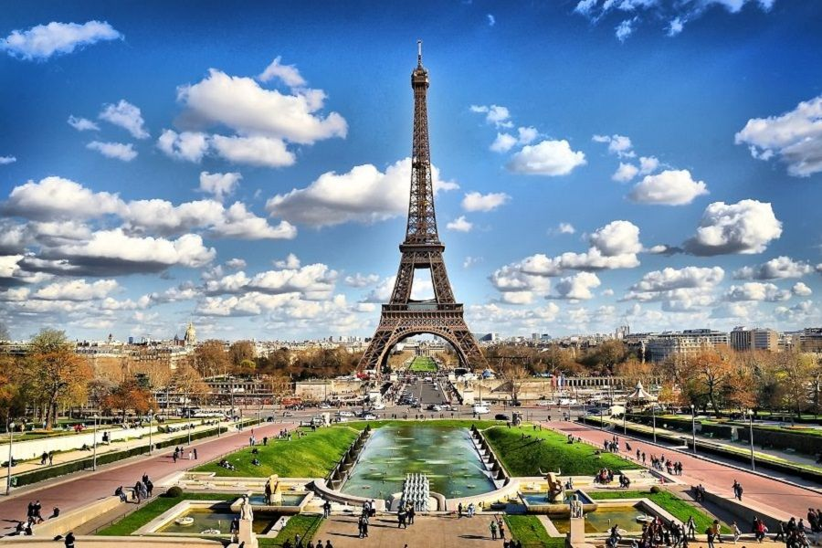

Paris je glavni i najveći grad u Francuskoj , a procjenjuje stanovništva od 2,148,271 stanovnika što je od 2020. godine,
na površini od više od 105 četvornih kilometara (41 kvadratnih milja). Grad je glavno željezničko, autocestovno i zračno-prometno čvorište koje opslužuju dvije
međunarodne zračne luke: Pariz – Charles de Gaulle
(druga najprometnija zračna luka u Europi) i Pariz – Orly.
Otvoren 1900. godine, gradski sustav podzemne željeznice, Paris Métro , dnevno opslužuje 5,23 milijuna putnika; to je drugi najprometniji metro sustav u Europi nakon moskovskog metroa.
Gare du Nord je 24. najprometnija željeznička stanica na svijetu, ali prva smještena izvan Japana, s 262 milijuna putnika 2015.
Paris je posebno poznat po svojim muzejima i arhitektonskim znamenitostima:
Louvrebio je najposjećeniji muzej umjetnosti na svijetu u 2019. godini, s 9,6 milijuna posjetitelja.
Paris je 2019. primio 38 milijuna posjetitelja, mjereno hotelskim boravkom, a najveći broj stranih posjetitelja došao je iz Sjedinjenih Država, Velike Britanije, Njemačke i Kine. Bila je rangirana kao drugo najposjećenije
turističko odredište na svijetu u 2019. godini, nakon Bangkoka i neposredno ispred Londona.
nogometni klub Paris Saint-Germain i Rugby Union
klub Stade Français sa sjedištem u Parizu. Stade de France s 80.000 sjedećih mjesta , izgrađen za FIFA-in svjetski kup 1998. godine , smješten je sjeverno od u susjednoj komuni Saint-Denis.
Paris je domaćin godišnjegOtvoreni Grand Slam turnir Francuskog tenisa na crvenoj šljaci Roland Garrosa.
Toranj je visok 300 m, što je otprilike 75 katova. Uključujući antenu visine 20.75 m, građevina je visoka 320.75 m, što je otprilike 81 kat. U vrijeme njegove gradnje povodom Svjetske izložbe 1889., Toranj je zamijenio Washingtonski spomenik, koji je do 1932. bio najviša građevina na svijetu. Eiffelov Toranj je najviša građevina u Parizu. Druga po visini građevina u Parizu je Tour Montparnasse (Toranj Montparnasse), sa 210 m. Metalna konstrukcija Eiffelovog tornja ima masu 7 300 tona, a ukupna masa je 10 100 tona. Broj stepenica do vrha je varirao kroz povijest, kroz različite restauracije: u vrijeme izgradnje 1889., bilo je 1710 stepenica do vrha na 300.65 m; nakon restauracije 1980-ih, bilo je 1920 stepenica; i danas ima 1665 stepenica (javnosti nije dostupan vrh stubištem; do vrha se stiže liftom s druge platforme).
